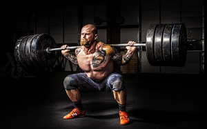

Saveti!

1. Ojačavanje mišića zahteva dobro osmišljen trening sa
tegovima. Četvorodnevni trening u toku jedne nedelje optimum
je za one koji žele da povečaju mišićnu masu.
2. Kada je mršavljenje u pitanju, potrebna vam je kombinacija
treninga sa tegovima i kardio vežbi. Mnogi često greše – radeći
previše kardija i potpuno zapostavljajući tegove, koristeći samo
trake za trčanje, bicikle, stepenice, ali ovo nije jedini način da
izgubite masne naslage.
3. Određene vežbe zahtevnije su od drugih, pa samim tim
zahtevaju više odmora između ponavljanja.
4. Broj treninga zavisi od vašeg trenutnog fitnes nivoa, ciljeva
i vremenskih ograničenja. Što je viši cilj to je više rada potrebno
da se uloži. To znači da svoj plan treninga morate uskladiti sa
vašim mogućnostima, a ako vam je potrebno više vremena da
postignete zadate ciljeve savetuje se strpljenje!
5. Svakako je najsigurnije za vas da počnete sa laganim
programom, po mogućstvu pod budnim okom obučenog trenera.
6. Bilo bi dobro da se pre početka treninga posavetujete sa
doktorom, jer bi “zeleno svetlo” od njega moglo da vam
da potreban psihički podsticaj, ali i da vas sačuva od povreda,
bolesti i ostalih nedaća.
7. Pijući sok, nećete ugasiti žeđ, a ni glad. Fokusirajte se na
jedenje kalorija, jer tako dobijate više vlakana, a samim tim
i duži osećaj sitosti. Dovoljne su sekunde da popijete 250ml
soka od pomorandže, ali kada je jedete potrebno vam je više
vremena u kojem ćete uživati u kalorijama koje unosite.
8. Jedna čaša crvenog vina, nije na odmet - ali samo jedna
na dan. Čaša vina sadrži manje kalorija nego neki koktel,
a više antioksidanata i fitohemikalija nego jeda čaša belog
vina ili piva.

Zanimljvosti!

1. Ako ne vežbaš redovno, već od 65. godine snaga
tvojih mišića može pasti i na 80%. A tada je, jasno
ti je, teže trenirati.
2. Tvoje telo je rob navika. Što više vežbaš, ono se
više navikava da troši masne naslage, i više ih ne
koristi kao zalihe.
3. Vežbanje pospešuje rast kose. Na folikule dlake
utiče kiseonik. Redovan trening pospešuje dotok
krvi u mozak, i tako obezbeđuje dovoljno kiseonika.
4. Ne znaš da li ti danas nije dan, ili je intenzitet
treninga zaista prejak u ovom trenutku? Pokušaj
da radiš vežbu i pričaš – ukoliko ne možeš, to je
znak da treba da usporiš.
5. Žene su okretnije od muškaraca, i brže napreduju
u svim sportovima u kojima dominira okretnost,
budući da lakše ovladavaju tehnikom. S druge strane,
muškarci se manje zamaraju pri mišićnom naporu
većeg intenziteta ili veće dužine trajanja.
6. Muškarci i žene sagorevaju masne naslage na
drugačiji način: testosteron pomaže muškarcima da
izgrade mišiće i izgube masne naslage brže. Znači,
nemoj da se plašiš da povećaš težinu na
treningu snage.
7. Ukoliko u svoje treninge uključuješ više
raznolikih vežbi, ostvaruješ bolju formu i bolje
se štitiš od povreda na treningu. Bolja forma je
rezultat toga što tvoje telo ne uspeva da se “navikne”
na vežbu i zato se pojedine mišićne grupe
redovno aktiviraju.

Top 5!
Ovo su neke od najpoznatijih licnosti fitnes industrije
01. Arnold Schwarzenegger
Arnold Schwarzenegger (rodj. 1946.) najpoznatiji je austrijsko-američki bodybuilder i glumac na svijetu; biznismen, investitor,
autor, filantrop, političar i bivši guverner Kalifornije (inače drugi glumac po redu, nakon Ronalda Reagana) i sedmerostruki
osvajač Mr. Olympia.
02. Ronnie Coleman
Ronnie Coleman (rodj. 1964.) u svojoj profesionalnoj karijeri je osvojio fascinantnih osam titula Mr. Olympia i jedna je od dvije
žive ikone ovog sporta koje su nadmašile čuvenog Arnolda Schwarzeneggera i njegovih 7 titula.
03. Jay Cutler

Jay Cutler (rodj. 1973.) četiri puta postao "Mr. Olympia", ipak je i dalje bio u bliskoj karijeri u Holivudu. Dakle, u očima mnogih, on
je najmoćniji čovek na svetu. Jay je prvo pobedio na takmičenju g-dina Olympia 2006. godine, pomerajući trenutnog šampiona Ronnija Kolmana.
04. Dorian Yates
Dorian Yates (rodj. 1962.) je bivši profesionalni bodibilder koji je okrunjen za Mr. Olimpiju šest puta uzastopno, od 1992.
do 1997. godine, i drži četvrti najveći broj titula Mr. Olimpia svih vremena iza bodibildinga, kao što su Arnold Schvarzenegger,
Lee Hanei, Jai Cutler i Ronnie Coleman.
05. Lee Haney
Lee Haney (rodj. 1959.) je američki bivši IFBB profesionalni bodibilder. Hanei deli rekord svih vremena za najviše titula Mr. Olimpije u osam sa Ronnie Coleman. Predsjednik Bill Clinton imenovao je Haneija predsjednikom Vijeća za fizičku kondiciju i sport.